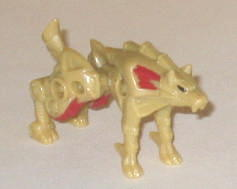
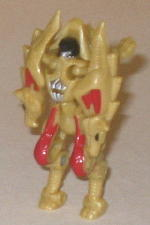
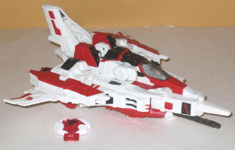
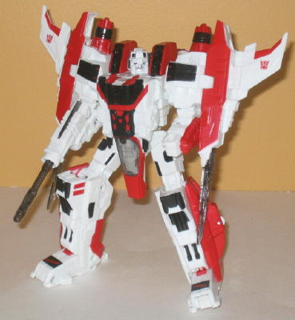

Starscream
w/ Razorclaw (Botcon 2008 Exclusive)
Starscream
w/ Razorclaw (Botcon 2008 Exclusive)
Razorclaw


Allegiance
: Decepticon
Size
: Mini-Con (comes in a 6-pack
with Starscream,
Autobot Jazz
,
Goldbug
,
Grimlock
,
and
Optimus Prime
)
Difficulty of Transformation
: Very
Easy
Color Scheme
: Dull mustard yellow
and some metallic silver, light orangish red, and black
Rating
: 5.9
(NOTE: Because this is a repaint, this is
not a full-blown review. This mainly covers any changes made to the mold
and the color scheme, and merely compares it to the Predator Attack Minicon
Team. For a review on the mold itself, read the review of the Predator
Attack Minicon Team
here
.)
Razorclaw's a bit of
an enigma. The original G1 Razorclaw was a yellow lion, and his color is
mimicked here more or less, but with considerably more yellow and less
orange. However... this mold's a wolf. The other two Predacon Minicons
in this year's set have beast modes that are good matches, but Razorclaw
is defintiely off. Plus, a yellow and orange wolf? Yeah.... the colors
definitely don't match the beast mode of this toy. That's not to say that
I hate Razorclaw's color scheme per se-- though I'm not a huge fan of yellow,
it's a dull yellow here, so it's hardly a loud color scheme. Plus, the
bright orangish red really works well against the yellow, and the bits
of black on the robot head and beast eyes are nice touches. (The silver
doesn't clash, but it doesn't contrast well either, so I'm neutral on that
color choice. Making the Decepticon symbol in silver wasn't wise either,
since it's hard to see because of that.) I just think the colors don't
fit a wolf well at all.
No mold changes have
been made to Botcon Razorclaw.
Razorclaw Bio
:
FUNCTION: Predacon Commander
MOTTO: "Patience is the companion of
wisdom."
Razorclaw was once a professor at the
Tyrest University, one of the primary institutions of knowledge and science
on Cybertron. He was renowned for his patience, calm demeanor and unconventional
thinking. Tyrest University was eventually destroyed and Razorclaw retreated
into the Manganese Mountains with two of his students, Divebomb and Rampage.
There they hid from the Autobot forces while honing their hunting skills.
In time, tales were told about hunters, known as the Predacons, who haunted
the mountains. Despite having adopted violence, he remains patient with
those who seek knowledge from him.
Strength: 8.0
Intelligence: 9.0
Speed: 8.0
Endurance: 8.0
Rank: 8.0
Courage: 9.0
Fireblast: 8.0
Skill: 9.0
Starscream


Allegiance
: Decepticon
Size
: Voyager (comes in a 6-pack
with Razorclaw, Autobot Jazz, Goldbug, Grimlock, and Optimus Prime)
Difficulty of Transformation
:
Easy
Color Scheme
: White, red, and some
black and clear tinted plastic, dark blue, and silver
Rating
: 7.9
(NOTE: Because this is a repaint, this is
not a full-blown review. This mainly covers any changes made to the mold
and the color scheme, and merely compares it to Cybertron Voyager Starscream.
For a review on the mold itself, read the review of Cybertron Voyager Starscream
here
.)
Starscream's still the
character the toy was originally molded to be, only this time, following
the "mirror universe" concept, he's a good guy! (So is he super-LOYAL now,
or what?) Apparently in a mirror universe, a good Starscream= Jetfire.
Color-wise, it works on the mold-- red, black, and white is a good color
scheme, if not entirely original, and you can tell the Botcon folks really
worked hard to make Starscream look as much like Jetfire without, y'know,
actually BEING Jetfire. The layout of the red and black paint apps mirrors
G1 Jetfire's VERY closely, and there's a ton of paint apps-- definitely
one of the high points of this figure. Even though almost every single
one of his parts is molded in the same white plastic, it's broken up by
so many paint apps there aren't any patches of white that are too large
unless you look at the underside of his jet mode or back of his robot mode.
And if the attempt was to make this mold actually BE Jetfire, I'd say job
well done. However... Starscream colored exactly like Jetfire? Is that
really the best idea they could come up with? I felt something a bit more
original should have been done, and they missed out on the opportunity
to really come up with something unique here.
No mold changes have
been made to Botcon Starscream.
Starscream Bio
:
FUNCTION: Lieutenant Commander
MOTTO: "Among the mysteries of science
lies the key to victory."
In his youth, Starscream was one of
the most brilliant scientific minds to ever graduate from the Crystal City
Science Institute on Cybertron. When the Great War between the Autobots
and Decepticons began, Optimus Prime tried to recruit Starscream, but he
refused. As a consequence, Optimus ordered the Crystal City destroyed as
Starscream watched in horror. Shortly afterward, the Decepticons rescued
Starscream and it was at that point he knew his purpose. He swore a life
debt to Megatron and decided to apply his scientific skills toward the
development of ways to fight the Autobots. Through his work, he found ways
to design more complex transformations based on Megatron's original technology
and has developed weapons able to effectively counter Prime's oppression.
He approaches his work with a grim demeanor and the fervent hope that one
day, rather than using his skills for destruction, he will instead be able
to work of the betterment of Cybertron.
Strength: 8.0
Intelligence: 9.0
Speed: 9.0
Endurance: 7.0
Rank: 9.0
Courage: 8.0
Fireblast: 8.0
Skill: 9.0
The Starscream/Razorclaw
duo are the weakest two toys of the core set, in my opinion. Razorclaw
is just a weak mold in general, and making him a yellow wolf doesn't help.
Starscream is certainly better, but it doesn't measure up to the TRU-exclusive
"Thrust" paint job the mold original had when released in the States, and
I felt something a bit more creative could have been done with a Good Starscream
than simply making him look like Jetfire. They're not BAD toys, they just
pale in comparison to most of the other exclusives from '08.
Review by Beastbot
Back to Botcon/OTFCC
Exclusives Index